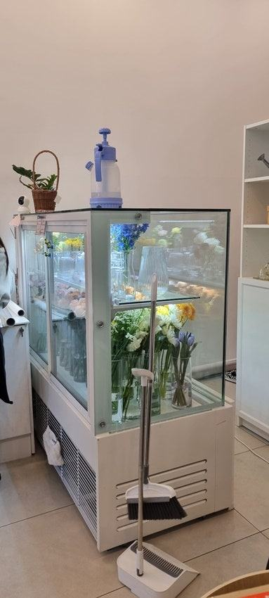
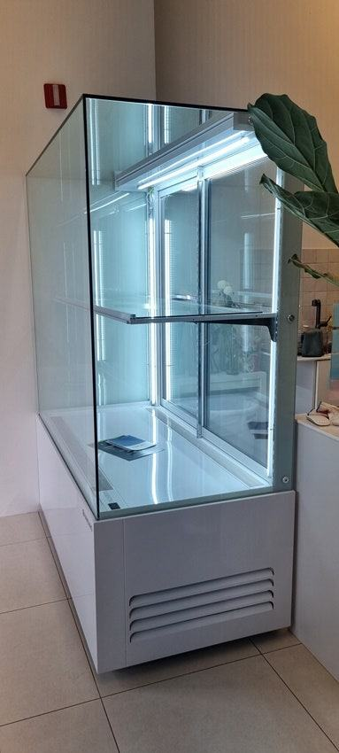
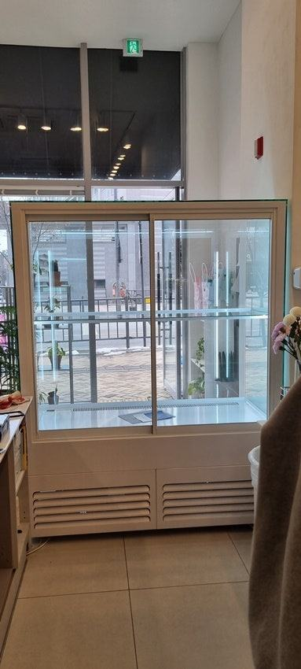
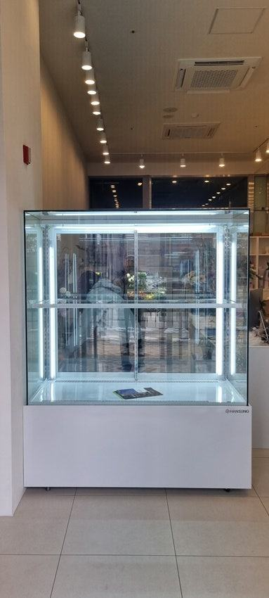
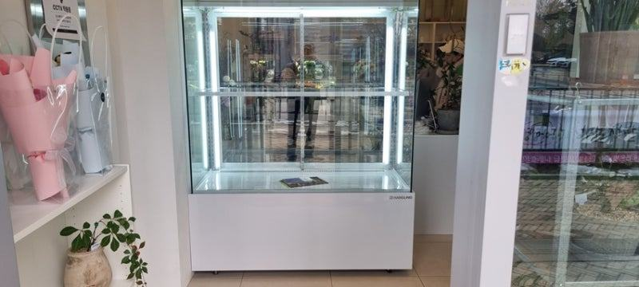
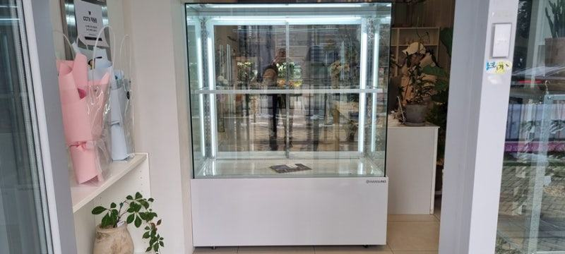
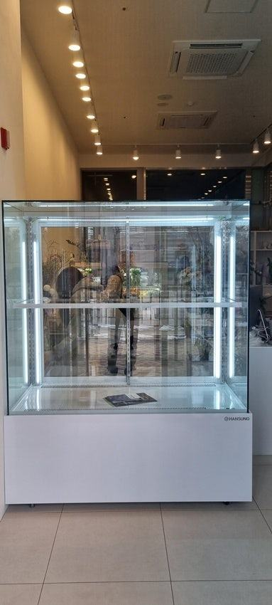
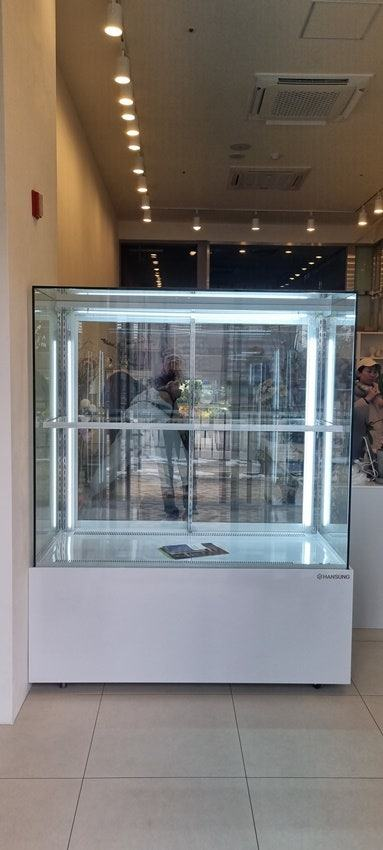

오픈쇼케이스
샐러드가게 인테리어, 오픈쇼케이스 자리부터 정해야 하는 이유

샐러드가게는 손님이 들어와 오픈쇼케이스에서 샐러드를 집고 계산대로 가는 흐름이 매장의 중심이라, 쇼케이스 위치와 크기를 먼저 정하고 나머지 인테리어를 맞추는 편이 실패가 적습니다. 채소 색을 살리는 조명, 벽면 매립 여부, 영업 후 나이트커버까지 공사 전에 함께 정해 두세요.
안녕하세요. 샐러드와 샌드위치 매장의 오픈쇼케이스를 인테리어에 맞춰 제작하는 한성쇼케이스입니다.
샐러드가게 인테리어를 상담하다 보면 벽지와 조명, 테이블은 이미 다 골라 두셨는데 쇼케이스 자리는 "남는 데 넣으면 되겠지" 하고 미뤄 두신 경우가 많습니다.
그런데 샐러드가게에서 손님이 가장 오래 바라보는 곳은 결국 초록빛 채소가 담긴 쇼케이스입니다. 이 자리가 어정쩡하면 동선이 꼬이고, 공들인 인테리어도 빛이 바랩니다.
반대로 쇼케이스를 먼저 잡으면 나머지 배치가 자연스럽게 따라옵니다.
오늘은 샐러드가게 인테리어를 시작할 때 오픈쇼케이스와 관련해 미리 정해 둘 것들을 정리해 드리겠습니다.
1. 손님 흐름의 중심에 두기
샐러드가게는 테이크아웃 손님 비중이 높아, 들어와서 고르고 계산하고 나가는 흐름이 짧을수록 회전이 좋습니다.
입구에서 쇼케이스가 바로 보이고, 집어 든 손으로 몇 걸음 안에 계산대에 닿는 배치가 이상적입니다.
쇼케이스 앞에서 손님이 고민하며 머무는 공간도 필요합니다. 그 자리가 출입 통로와 겹치면 뒤에 들어오는 손님과 부딪히니, 쇼케이스 앞 머무는 공간과 지나가는 통로를 도면에서 나눠 표시해 보세요.
직원이 주방에서 샐러드를 채우러 나오는 길이 손님 동선과 엇갈리지 않는지도 확인합니다.
- 입구에서 쇼케이스가 바로 보이는지
- 쇼케이스에서 계산대까지의 거리
- 손님 머무는 공간과 통로 구분
2. 채소 색이 살아나는 조명과 마감
샐러드의 상품성은 채소의 선명한 초록과 토마토, 파프리카의 붉은빛에서 나옵니다. 매장 전체 조명이 따뜻한 전구색이어도 쇼케이스 내부 조명은 채소 색이 탁해 보이지 않는 색으로 따로 고르는 경우가 많습니다.
샘플 샐러드를 놓고 조명 색을 비교해 보시면 차이가 바로 보입니다.
외관은 화이트와 우드 계열이 샐러드가게와 잘 어울리는 편입니다. 쇼케이스 프레임과 하부 마감을 카운터, 벽 선반과 같은 톤으로 맞추면 장비가 아니라 가구처럼 보입니다.


3. 벽면 매립과 브랜드 노출
카운터 뒷벽이나 매장 한쪽 벽이 비어 있다면 오픈쇼케이스를 벽에 매립해 포인트 벽으로 쓰는 방법이 있습니다.
이전에 화이트·우드 톤 매장의 카운터 뒷벽에 1200×750×1900 규격의 매립형 오픈쇼케이스를 넣고, 유리 선반 3단과 은은한 주광색 조명, 상단 로고 각인을 더해 매장의 얼굴로 만든 사례가 있습니다.
매립형은 인테리어 공사 때 기계실 통풍 공간과 전원 위치를 함께 잡아야 합니다. 마감이 끝난 뒤에는 고치기 어려우니 인테리어 업체와 쇼케이스 도면을 미리 공유해 주세요.
- 매립할 벽의 폭·깊이·높이
- 기계실 통풍구 위치
- 상단 로고 각인 여부
4. 청소와 야간 관리까지 생각한 구성
샐러드 용기에서 드레싱이 새거나 채소 부스러기가 떨어지기 쉬워 선반 청소가 잦습니다. 유리 선반을 쉽게 빼고 끼울 수 있는 구조면 마감 청소 시간이 줄어듭니다.
문 없는 쇼케이스라 영업 후에는 나이트커버를 내려 냉기를 붙잡고 먼지를 막아 두는 것이 좋습니다. 커버를 내렸을 때 모습도 매장 분위기의 일부이니 색과 위치를 함께 정해 두세요.
체크리스트
- 입구–쇼케이스–계산대 동선
- 채소 색을 살리는 내부 조명
- 프레임·하부 마감과 매장 톤
- 매립 시 통풍구·전원 위치
- 탈착 선반과 나이트커버
현장에서 자주 보는 경우: 진열 장비가 인테리어와 따로 놀 때
샐러드가게만의 일은 아닙니다. 원문에서 소개한 꽃집처럼 상품의 색감과 신선함이 곧 매출인 매장은 일반 냉장 장비를 들이면 보관 조건도, 디자인도 매장과 어긋나기 쉽습니다.
상품이 시들어 보이거나 공간이 정돈되지 않으면 손님의 발길을 붙잡기 어렵다는 점은 샐러드도 같습니다.
그래서 한성쇼케이스는 매장 규모와 스타일에 맞춰 설계하고, 상품 색을 돋보이게 하는 조명과 내부 환경을 함께 맞춥니다.
출고 전에는 119가지 품질 테스트를 거치며, 인테리어 단계부터 상담하시면 쇼케이스와 공간이 한 몸처럼 보이도록 잡아 드립니다.










자주 묻는 질문
인테리어 공사 중 언제 쇼케이스 상담을 하면 좋나요?
평면도가 나오는 시점이 가장 좋습니다. 쇼케이스 위치와 크기가 정해져야 전기, 통풍, 카운터 높이를 맞출 수 있기 때문입니다.
작은 샐러드가게에도 매립형이 가능한가요?
가능합니다. 폭이 좁은 대신 높이로 진열 칸을 확보하는 방식으로 설계할 수 있고, 기계실 통풍만 확보되면 작은 매장에서도 깔끔하게 들어갑니다.
샐러드와 음료를 함께 진열해도 되나요?
선반 간격을 조정할 수 있게 설계하면 함께 둘 수 있습니다. 병 음료는 무게가 있으니 아래 칸에, 샐러드는 손님 눈높이 칸에 두는 구성이 많습니다.
매장 조건에 맞춰 만드는 한성쇼케이스
원하시는 제품 사진과 설치할 공간 사진만 보내 주셔도 매장에 맞는 구성을 추천해 드립니다.
- 전국 240여 개 A/S 전담 센터 운영
- 본사 대량 자재 매입으로 품질 대비 합리적인 가격
- 유럽제·삼성 냉각 콤프레셔 적용
- 국내 최초 쇼케이스 전문 디자이너 상주
매장 폭과 원하는 진열 구성을 알려 주세요. 실측과 견적을 안내해 드립니다.
031-986-2458